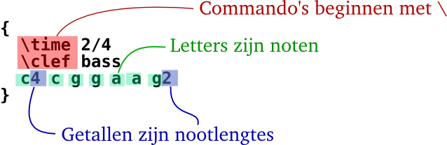
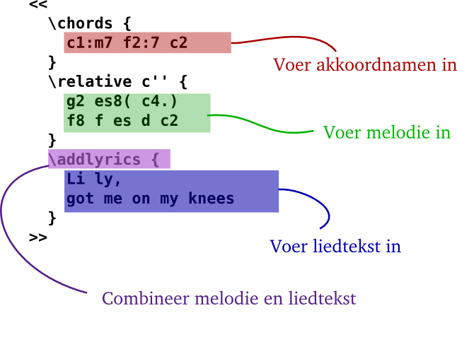
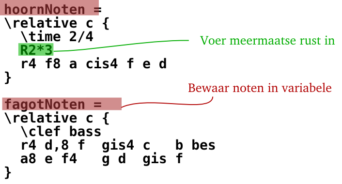
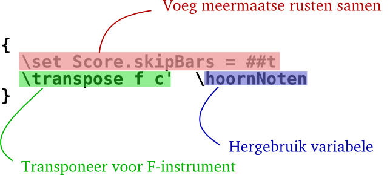
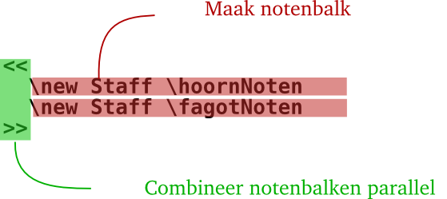

Tekstinvoer
Muziek “Compileren”

(klik om te vergroten)
LilyPond is een batch programma: het wordt uitgevoerd op een tekstbestand waarin de muziek wordt beschreven. Het resultaat kan op het beeldscherm worden bekeken of worden afgedrukt. In bepaalde opzichten lijkt LilyPond meer op een programmeertaal dan op een grafisch muziekprogramma.
Je schrijft de muziek niet door noten van een grafische werkbalk naar een zichzelf dynamisch verversende partituur te slepen; je schrijft muziek door het intypen van tekst. Deze tekst word geïnterpreteerd (of “gecompileerd”) door LilyPond, die hiervan prachtig gegraveerde bladmuziek maakt.
Mensen die gewend zijn aan een grafische gebruikersinterface moeten wellicht een nieuwe manier van werken aanleren, maar de resultaten zijn de moeite meer dan waard!
Nota bene : We presenteren een kort overzicht van onze tekstinvoer – het is niet zo ingewikkeld als het klinkt! Maak je geen zorgen, je hoeft niet elk detail in deze voorbeelden te begrijpen; in onze beginnershandleiding wordt alles stap voor stap uitgelegd.
Waarom moeilijk doen als het ook makkelijk kan?
Noten worden gecodeerd met letters en nummers. Speciale commando’s worden ingevoerd met een backslash.

Verplaatsingen worden gevormd met verschillende benamingen:
voeg -is toe voor een kruis en -es voor een
mol. LilyPond bepaalt zelf waar de toevallige tekens
geplaatst worden.

Popmuziek
Combineer akkoorden en songteksten om zogenaamde leadsheets te maken:

Orkestpartijen
Het invoerbestand bevat de noten van het muziekstuk. Partituur en partijen kunnen vanuit dit zelfde invoerbestand worden gemaakt. Dus het veranderen van een noot heeft altijd invloed op partijen en partituur, zodat beide altijd up-to-date zijn. Om dezelfde muziek op verschillende plaatsen te kunnen invoegen, moet aan de noten een “variable” (een naam) worden toegekend.
Deze variabele wordt vervolgens in één partij gebruikt (hier getransponeerd en met samengevoegde rusten):

Dezelfde variabele wordt ook in de volledige partituur gebruikt (hier klinkend en met uitgeschreven rusten):

Beginnershandleiding
We realiseren ons dat veel gebruikers deze manier van muziek invoeren een beetje vreemd vinden. Daarom hebben we een uitgebreide handleiding geschreven om nieuwe gebruikers op weg te helpen, te beginnen met Beginnen. Het beste kun je beginnen met deze beginnershandleiding omdat hierin de meeste vragen worden beantwoord.
Lees liever eerst de beginnershandleiding alvorens eventuele fouten in het programma aan ons te melden! Nieuwe gebruikers denken soms dat LilyPond niet goed werkt, terwijl het in feite precies werkt zoals de bedoeling is.
Verdere informatie is beschikbaar in Handleidingen.
Omgevingen voor eenvoudiger bewerken
Tunefl
Met tunefl kun je partituren direct online zetten, zonder LilyPond op je computer te installeren. Het is mogelijk om alle functies van het programma te proberen in een eenvoudige web interface.

(klik om te vergroten)
LilyPond gaat hoofdzakelijk over het produceren van gegraveerde bladmuziek van topkwaliteit; het maken van een Grafische Gebruikers Interface (GUI) zou ons enkel van dit doel afleiden. Er zijn wel andere projecten die als doel hebben het maken van LilyPond-invoer gemakkelijker te maken.
Sommige omgevingen hebben syntax highlighting, automatische commando aanvulling, en voorbereide sjablonen. Andere programma’s bieden een GUI die directe manipulatie van een grafische partituur mogelijk maakt. Voor meer informatie, zie Eenvoudiger bewerken.
En nu?
Je bent nu zover om LilyPond te downloaden. Nog steeds niet overtuigd? Lees over Eenvoudiger bewerken.
Andere talen: English, català, česky, deutsch, español, français, magyar, italiano, 日本語, 中文.
About automatic language selection.